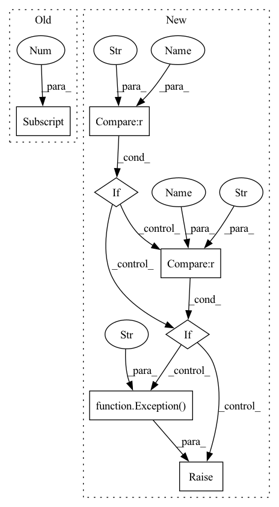

Pattern ID :9608
Before Change
if output.shape[-1] == target.shape[-1] :
pass
else:
depth = output.shape[-1]After Change
epsilon = 3.6e-44
cal_loss = -(target * pd.log(output + epsilon) + (1. - target) * pd.log(1. - output + epsilon))
if reduction == "mean" :
return pd.mean(cal_loss)
elif reduction == "sum" :
return pd.sum(cal_loss)
elif reduction == "none":
return cal_loss
else:
raise Exception("The reduction values are "mean", "sum", and "none"." )
def mean_squared_error(output, target, reduction="mean"):
Return the TensorFlow expression of mean-square-error (L2) of two batch of data.In pattern: SUPERPATTERN
Frequency: 3
Non-data size: 7
Instances Fragment ID: 34713969
Project Name: tensorlayer/tensorlayerx
Commit Name: 21bf2328ccadff5a24520c774d17bfd6d5e05fa4
Time: 2022-01-26
Author: laicheng_vip@163.com
File Name: tensorlayerx/losses/paddle_cost.py
M Class Name: AnonimousClass
N Class Name: AnonimousClass
M Method Name: binary_cross_entropy(3)
N Method Name: binary_cross_entropy(3)
M Parent Class:
N Parent Class:
M File Name: tensorlayerx/losses/paddle_cost.py
N File Name: tensorlayerx/losses/paddle_cost.py
M Start Line: 100
M End Line: 108
N Start Line: 87
N End Line: 103
Before Change
if output.shape[-1] == target.shape[-1] :
pass
else:
depth = output.shape[-1]After Change
nmse_a = pd.sqrt(pd.fluid.layers.reduce_sum(pd.fluid.layers.square_error_cost(output, target), dim=-1))
nmse_b = pd.sqrt(pd.fluid.layers.reduce_sum(pd.square(target), dim=-1))
if reduction == "mean" :
nmse = pd.fluid.layers.reduce_mean(nmse_a / nmse_b)
elif reduction == "sum" :
nmse = pd.fluid.layers.reduce_sum(nmse_a / nmse_b)
elif reduction == "none":
nmse = nmse_a / nmse_b
else:
raise Exception("The reduction values are "mean", "sum", and "none"." )
return nmse
def absolute_difference_error(output, target, reduction="mean"): Fragment ID: 34713968
Project Name: tensorlayer/tensorlayerx
Commit Name: 21bf2328ccadff5a24520c774d17bfd6d5e05fa4
Time: 2022-01-26
Author: laicheng_vip@163.com
File Name: tensorlayerx/losses/paddle_cost.py
M Class Name: AnonimousClass
N Class Name: AnonimousClass
M Method Name: normalized_mean_square_error(3)
N Method Name: normalized_mean_square_error(4)
M Parent Class:
N Parent Class:
M File Name: tensorlayerx/losses/paddle_cost.py
N File Name: tensorlayerx/losses/paddle_cost.py
M Start Line: 148
M End Line: 172
N Start Line: 135
N End Line: 146
Before Change
if weights and [x for x in weights if x > 0]:
// TODO
embedding = np.average(self.lookup(document[1] ), weights=np.array(weights, dtype=np.float32), axis=0)
else:
// TODO
embedding = np.mean(self.lookup(document[1]), axis=0)After Change
self.univ_sent_emb = hub.load("https://tfhub.dev/google/universal-sentence-encoder-large/5")
def transform(self, query: str, method: str, id: Optional[str] = None, tags=None):
if method == "fasttext_bm25" :
document = Tokenizer.tokenize(query)
weights = self.scoring.weights(document) if self.scoring else None
vector = self.lookup(document[1])
if weights and [x for x in weights if x > 0]:
embedding = np.average(vector, weights=np.array(weights, dtype=np.float32), axis=0)
else:
embedding = np.mean(vector, axis=0)
elif method == "univ_sent_emb" :
embedding = self.univ_sent_emb([query]).numpy().squeeze()
else:
raise Exception("method unknown" )
embedding = self.removePC(embedding) if self.lsa else embedding
return self.normalize(embedding) if self.embeddings else embedding Fragment ID: 34713970
Project Name: bluebrain/search
Commit Name: 24ee5fba4c6ac0c00e90ad11a8bf0cb02e712147
Time: 2020-04-01
Author: pierre-alexandre.fonta@epfl.ch
File Name: cord19q_extra/cord19q_extra/embeddings.py
M Class Name: CustomEmbeddings
N Class Name: CustomEmbeddings
M Method Name: transform(5)
N Method Name: transform(2)
M Parent Class: Embeddings
N Parent Class: Embeddings
M File Name: cord19q_extra/cord19q_extra/embeddings.py
N File Name: cord19q_extra/cord19q_extra/embeddings.py
M Start Line: 7
M End Line: 17
N Start Line: 16
N End Line: 32
Before Change
if output.shape[-1] == target.shape[-1]:
pass
else:
depth = output.shape[-1]
target = pd.fluid.layers.one_hot(target, depth=depth)
out = pd.fluid.layers.reduce_sum(
-(target * pd.log(output + epsilon) + (1. - target) * pd.log(1. - output + epsilon))
)After Change
if reduction == "mean":
return pd.mean(cal_loss)
elif reduction == "sum" :
return pd.sum(cal_loss)
elif reduction == "none" :
return cal_loss
else:
raise Exception("The reduction values are "mean", "sum", and "none"." )
def mean_squared_error(output, target, reduction="mean"):
Return the TensorFlow expression of mean-square-error (L2) of two batch of data. Fragment ID: 34713972
Project Name: tensorlayer/tensorlayerx
Commit Name: 21bf2328ccadff5a24520c774d17bfd6d5e05fa4
Time: 2022-01-26
Author: laicheng_vip@163.com
File Name: tensorlayerx/losses/paddle_cost.py
M Class Name: AnonimousClass
N Class Name: AnonimousClass
M Method Name: binary_cross_entropy(3)
N Method Name: binary_cross_entropy(3)
M Parent Class:
N Parent Class:
M File Name: tensorlayerx/losses/paddle_cost.py
N File Name: tensorlayerx/losses/paddle_cost.py
M Start Line: 100
M End Line: 108
N Start Line: 87
N End Line: 103